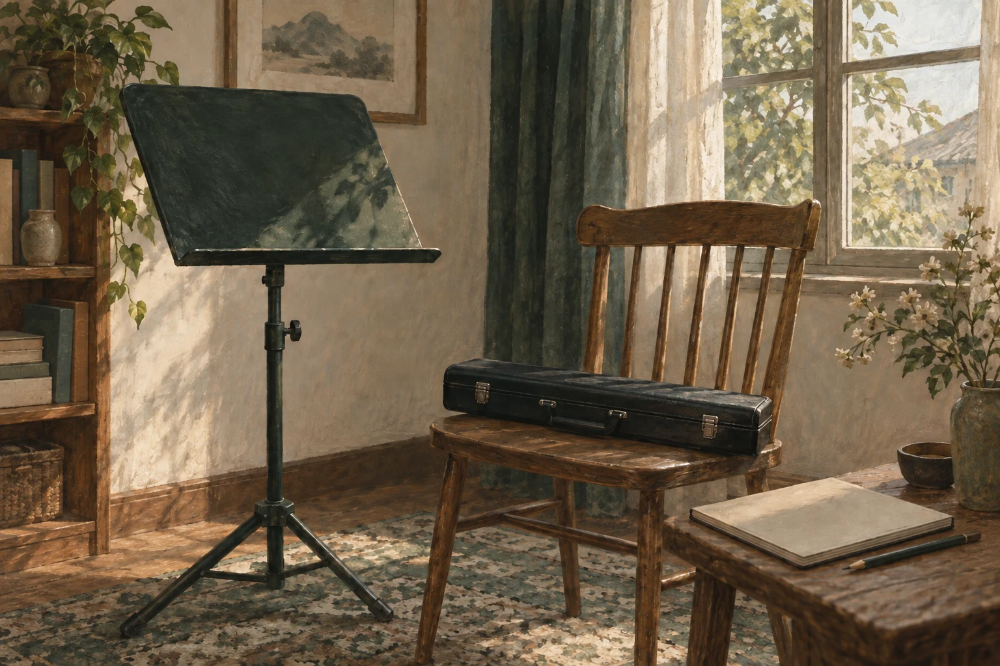
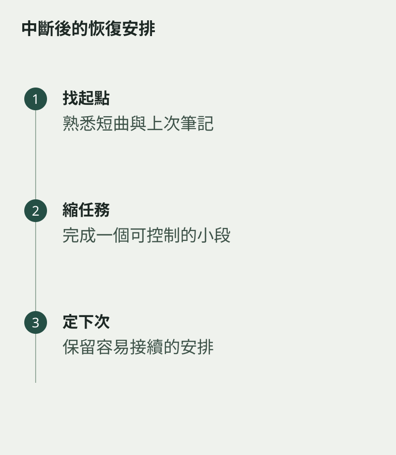

出差、考試或家事讓練習中斷，重新開始時容易想把欠下的時間一次補回來。音樂沒有一份必須當晚還清的時數帳。先用較容易的內容找回節奏，再逐步恢復，通常更能持續。
打開樂器盒前，先看上一則練習記錄。如果沒有記錄，就選一段熟悉短曲，聽今天的聲音與動作如何。這是一個起點，不是對中斷幾天的懲罰。
把第一天安排得容易完成
先做舒服的基本練習，再處理一個小段，時間可以比平日短。若為了補償而一口氣練很久，疲倦容易令姿勢與注意力下降，隔天反而更難繼續。
不要立即比較自己與中斷前最好的一次。看清今天能穩定做到的範圍，讓任務從這裏向前，而不是追着一段理想記憶跑。

修復安排，也修復期待
想想中斷是偶然事情，還是原來的練習時間一直不切實際。若晚間總被打斷，可以把任務分成較短段，或預留固定的替代時段。
重新開始的價值，在於下一次還願意繼續。完成一件小事便收好樂器，留下明確的下次目標，會比疲倦地宣誓「明天一定加倍」踏實。音樂可以容納生活的停頓，重要的是你知道怎樣回到它身邊。